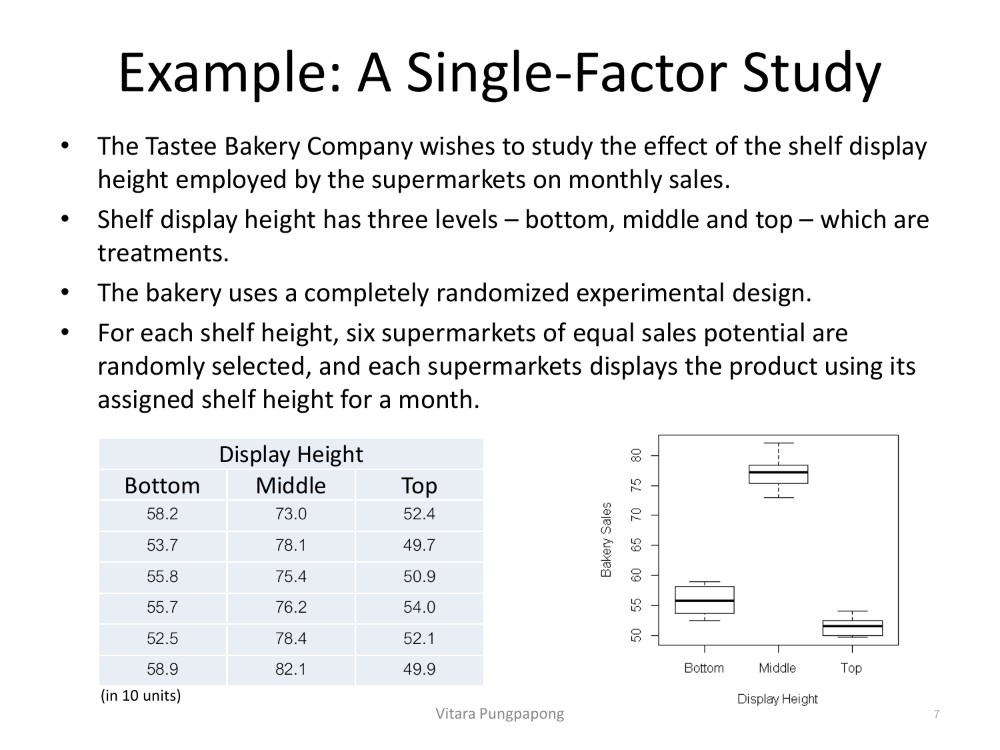
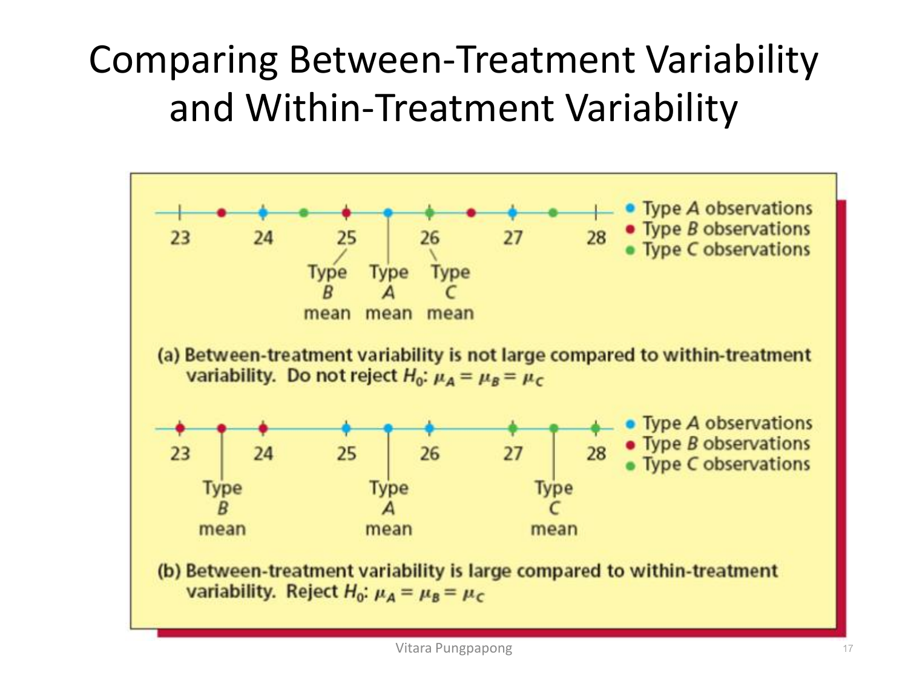
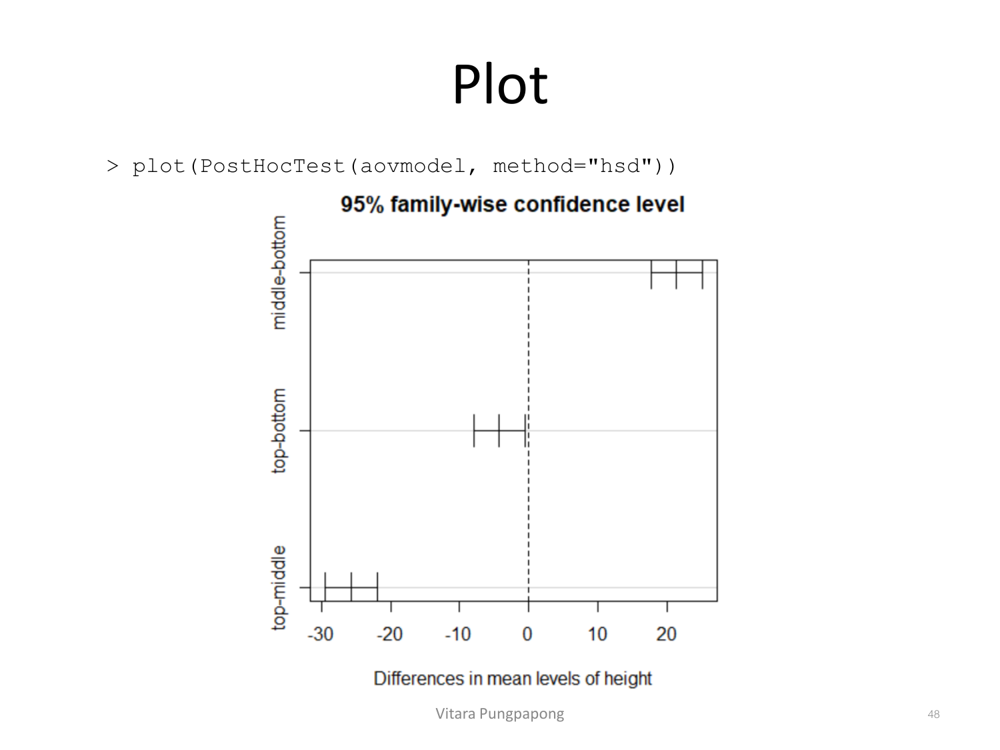

→ ฝึกกับโจทย์จริง: Cash Offers (Assignment 6)
Lecture 6 — Single Factor ANOVA
บทเรียนนี้ต่อยอดจาก Lesson 1 (Simple Linear Regression) โดยตรง: ANOVA ไม่ใช่เทคนิคใหม่ที่แยกจากกัน แต่เป็นกรณีพิเศษของ regression ที่ตัวแปรอิสระเป็นตัวแปรกลุ่ม (categorical) แทนตัวเลขต่อเนื่อง — สมการ, assumption, การอ่าน summary(), และการแปลผล ที่ฝึกมาแล้วใน Lesson 1 จะถูกใช้ซ้ำเกือบทั้งหมดที่นี่ เพียงแค่เปลี่ยนหน้าตาของตัวแปรอิสระ. เป้าหมาย 4 ข้อของบทนี้: เขียนสมการ ANOVA ถูก (ทั้งแบบ cell means และ factor effects), อ่าน ANOVA table ได้ทุกช่อง, แปลผล F-test และ post-hoc comparison เป็นประโยค, และอ่าน R output จาก aov()/lm()/TukeyHSD() ได้ทุกบรรทัด.
สไลด์เปิดเรื่องด้วยการแยก experimental studies (ระบุตัวแปรที่สนใจก่อน แล้วควบคุมตัวแปรอื่นเพื่อดูผลต่อตัวแปรที่สนใจ) ออกจาก observational studies (ไม่มีการควบคุมหรือแทรกแซงตัวแปรใด ๆ เลย เช่น sample survey) — นี่คือประเด็นเดียวกับหัวข้อ Associative vs Causal Inference ใน Lesson 1 ที่ใช้ตัวอย่างไอศกรีม/นักท่องเที่ยว/อุณหภูมิ เพียงแต่ตอนนี้จะเห็นมันในรูปแบบของ ANOVA แทน regression เชิงเส้นต่อเนื่อง.
คำศัพท์ที่ต้องจำ:
ตัวอย่างในสไลด์ — บริษัทอยากหาว่าปุ๋ยชนิด A, B, C แบบไหนให้ผลผลิตพืชดีที่สุด: ปุ๋ยแต่ละชนิดคือ treatment หนึ่งระดับของ factor "ชนิดปุ๋ย".
ใน completely randomized experimental design — สุ่มตัวอย่างอิสระให้แต่ละ treatment (สมมติว่าแต่ละ sample เป็น random sample จากประชากรของค่าที่เป็นไปได้ของตัวแปรตอบสนอง และแต่ละ sample เป็นอิสระต่อกัน) — เหตุผลที่ต้องสุ่มคือข้อเดียวกับที่ Lesson 1 สอน: การสุ่มกำหนดค่า treatment เองทำให้สรุปความสัมพันธ์เชิงเหตุผล (cause-and-effect) ได้ ไม่ใช่แค่ associative — เหมือนตัวอย่างต้นทานตะวันที่สุ่มความเข้มแสงใน Lesson 1 ทุกประการ. ตัวอย่างหลักของบทนี้ (การจัดวางสินค้าบนชั้น — หัวข้อ 2) ก็เป็น completely randomized design เช่นกัน ดังนั้นข้อสรุปเชิงเหตุผลจากมันจะสมเหตุสมผล.
Tastee Bakery Company อยากรู้ผลของความสูงของชั้นวางสินค้า (bottom, middle, top — 3 treatments ของ factor "shelf height") ต่อยอดขายรายเดือน. ใช้ completely randomized design: สุ่มซูเปอร์มาร์เก็ต 6 แห่งต่อความสูงชั้น 1 ระดับ (รวม 18 ร้าน) แต่ละร้านวางสินค้าตามความสูงที่กำหนดเป็นเวลา 1 เดือนแล้ววัดยอดขาย (หน่วย: 10 บาท/หน่วย):

คำนวณค่าเฉลี่ยแต่ละกลุ่มจากตัวเลขจริง:
สังเกตช่องกล่อง (box) ในภาพ: กล่องของ Middle ทั้งกล่องอยู่สูงกว่ากล่องของ Bottom และ Top อย่างชัดเจนโดยไม่มีการซ้อนทับกันเลย และแต่ละกล่องเองก็ค่อนข้าง "แคบ" (Bottom กระจายอยู่ในช่วงประมาณ 52.5–58.9 คือกว้างแค่ ~6.4 หน่วย) — ค่าเฉลี่ยทั้งสามกลุ่มห่างกันมาก (77.2 vs 55.8 vs 51.5 คือห่างกันถึง ~21–26 หน่วย) เทียบกับความกระจายภายในแต่ละกลุ่มที่แคบกว่ามาก — นี่คือสัญญาณล่วงหน้าว่าเมื่อคำนวณ F-test ในหัวข้อ 6–8 ค่า F จะออกมาสูงมาก เพราะความแปรปรวน "ระหว่างกลุ่ม" (between) มากกว่าความแปรปรวน "ภายในกลุ่ม" (within) อย่างชัดเจน.
One-way ANOVA คือกรณีที่ตัวแปรตอบสนอง (Y) เป็นตัวเลขต่อเนื่อง แต่ตัวแปรอิสระ (X) เป็นตัวแปรกลุ่ม (factor) ที่มีค่าที่เป็นไปได้เรียกว่า levels — เป็นการขยายผลจาก two-sample t-test (เทียบ 2 กลุ่ม) ไปสู่การเทียบมากกว่า 2 กลุ่มพร้อมกัน.
สัญกรณ์ที่ใช้ตลอดบทนี้:
สำหรับตัวอย่างนี้ \(r=3\) (bottom/middle/top) และแต่ละกลุ่มมี \(n_i=6\) รวม \(n_T=18\).
สไลด์เปิดประเด็นสำคัญที่สุดของบทนี้ทันที: ANOVA เป็นกรณีพิเศษของ regression ที่ใช้ indicator (dummy) variable — เช่นเดียวกับที่ Lesson 1 ใช้ indicator variable เพื่ออธิบาย intercept ต่างกันระหว่างกลุ่มเมื่อเทียบเส้นถดถอย. สำหรับ 3 กลุ่ม เขียนโมเดลถดถอยได้เป็น \(Y_i = \beta_0 + \beta_1 X_{i1} + \beta_2 X_{i2} + \varepsilon_i\) โดย \(X_1\) คือ indicator ของกลุ่ม 1 และ \(X_2\) คือ indicator ของกลุ่ม 2 (กลุ่ม 3 เป็นกลุ่มอ้างอิงที่ \(X_1=X_2=0\)) — การใช้ indicator variable แบบนี้ทำให้แต่ละ level ของ factor มี intercept (=ค่าเฉลี่ย) ต่างกันได้อย่างอิสระ โดยไม่มีโครงสร้างเชิงเส้นระหว่างค่าเฉลี่ยเหล่านั้นเลย.
โดย \(\mu_i\) คือค่าเฉลี่ยทฤษฎีของทุกค่าสังเกตในระดับ (cell) ที่ \(i\), และ \(\varepsilon_{ij} \sim \text{iid } N(0, \sigma^2)\) ซึ่งหมายความว่า \(Y_{ij} \sim \text{independent } N(\mu_i, \sigma^2)\). พารามิเตอร์ทั้งหมด: \(\mu_1, \ldots, \mu_r\) และ \(\sigma^2\) (รวม \(r+1\) ตัว)
คำถามหลักของ ANOVA คือคำถามเดียวกับ Simple Linear Regression ใน Lesson 1 ("X ช่วยอธิบาย Y ได้ไหม") เพียงแค่เปลี่ยนรูป: \(\mu_i\) ขึ้นกับ \(i\) หรือไม่
อีกวิธีเขียนโมเดลเดียวกันนี้ที่ตีความง่ายกว่าเมื่อพูดถึง "ผลของ treatment" คือ Factor Effects Model:
โดย \(\mu\) และ \(\tau_1, \ldots, \tau_r\) คือพารามิเตอร์ (รวมกับ \(\sigma^2\) เป็น \(r+2\) ตัว) — มากกว่า cell means model 1 ตัว ทั้งที่อธิบายข้อมูลชุดเดียวกัน นี่คือ overparameterization ที่ทำให้สมการนี้ไม่มีคำตอบเดียว (non-unique solution) ถ้าไม่มีข้อจำกัดเพิ่ม
ทางแก้คือใส่ constraint บน \(\tau_i\) — ตัวที่นิยมที่สุดคือ \(\sum\tau_i = 0\) ซึ่งลดพารามิเตอร์ลง 1 ตัวจนได้คำตอบเดียว ความหมายของ \(\mu\) และ \(\tau_i\) เปลี่ยนไปตาม constraint ที่เลือก:
ค่าประมาณของ \(\mu, \tau_i\) เองเปลี่ยนไปตาม constraint ที่เลือก แต่ปริมาณที่สนใจจริง เช่น \(\hat{\mu}+\hat{\tau}_1\) (ค่าเฉลี่ยกลุ่ม 1), หรือ \(\hat{\tau}_1-\hat{\tau}_3\) (ผลต่างกลุ่ม 1 กับ 3) จะเท่ากันเสมอไม่ว่าจะเลือก constraint แบบไหน — ข้อนี้สำคัญมากตอนอ่าน R output ในหัวข้อ 7 เพราะ R ให้เลือก constraint ผ่าน argument contrasts ได้ และตัวเลขที่ print ออกมาจะหน้าตาต่างกันโดยสิ้นเชิงแม้จะมาจากข้อมูลชุดเดียวกัน.
Hypothesis ในภาษา factor effects model แปลจาก cell means model ได้ตรงตัว:
ในเชิง regression ภายใต้ constraint \(\sum\tau_i=0\) ใช้ indicator variable แบบพิเศษ \(X_{ij,k}\):
ได้โมเดล \(Y_{ij} = \beta_0+\beta_1 X_{ij,1}+\cdots+\beta_{r-1} X_{ij,r-1}+\varepsilon_{ij}\) ซึ่งมี \(r-1\) สัมประสิทธิ์ (เพราะ \(\tau_r = -\tau_1-\cdots-\tau_{r-1}\) ถูกกำหนดจากตัวอื่นแล้ว) และ \(E[\bar{Y}_{\cdot\cdot}]=\beta_0\), \(\tau_i=\beta_i\) สำหรับ \(i\leq r-1\) — นี่คือหัวใจของความเชื่อมโยงระหว่าง ANOVA กับ regression: ANOVA ที่มี \(r\) กลุ่ม เทียบเท่ากับ regression ที่มีตัวแปรอิสระเป็น dummy variable จำนวน \(r-1\) ตัวพอดี (เก็บ intercept ไว้ 1 ตัวสำหรับกลุ่มอ้างอิง).
Cell means model: \(Y_{ij} = \mu_i + \varepsilon_{ij}\) โดย \(i=1,\ldots,4\) (แผน A,B,C,D), \(j=1,\ldots,15\), \(\varepsilon_{ij} \sim \text{iid } N(0,\sigma^2)\)
Factor effects model: \(Y_{ij} = \mu + \tau_i + \varepsilon_{ij}\) พร้อม constraint \(\tau_A+\tau_B+\tau_C+\tau_D=0\)
\(r=4\) (จำนวนกลุ่ม/แผนอาหาร), \(n_i=15\) ทุกกลุ่ม (balanced design), \(n_T = 4\times15 = 60\)
\(H_0: \mu_A=\mu_B=\mu_C=\mu_D\) (หรือเทียบเท่า \(\tau_A=\tau_B=\tau_C=\tau_D=0\)) — แผนอาหารทั้ง 4 แบบลดน้ำหนักได้เฉลี่ยเท่ากัน
เพราะ ANOVA เป็นกรณีพิเศษของ linear regression สไลด์ระบุตรง ๆ ว่า assumption ชุดเดียวกับ regression ยังใช้ได้หมด เพียงแค่แปลความหมายใหม่ในบริบทของกลุ่ม:
เทียบกับ 4 ข้อใน Lesson 1 ("mean zero, independent, constant variance, normal") จะเห็นว่าตรงกันเป๊ะ เพียงแค่ "mean" ตอนนี้ขึ้นกับกลุ่มแทนที่จะขึ้นกับ X ต่อเนื่อง.
สไลด์ของบทนี้ไม่ได้ลงรายละเอียดการเช็คแต่ละ assumption ด้วย diagnostic plot/test (เนื้อหานั้นอยู่ใน Lecture 3–4 เรื่อง Regression Diagnostics ที่ Lesson 1 อ้างถึงแล้ว) แต่หลักการเดียวกันนำมาใช้ตรง ๆ ได้:
aov()/lm() พล็อต Residuals vs Fitted เพื่อเช็ค constant variance ระหว่างกลุ่ม (ในทางปฏิบัติมักใช้ Levene's test หรือ Bartlett's test แทนการมองภาพ)ทั้งหมดนี้เป็นเครื่องมือเดียวกับที่ใช้กับ regression เชิงเส้นทุกประการ เพราะ ANOVA คือ regression ที่มี dummy variable ตามหัวข้อ 3.
ประมาณค่า \(\mu_i\) ด้วยค่าเฉลี่ยตัวอย่างของกลุ่มนั้น: \(\hat{\mu}_i = \bar{Y}_{i\cdot}\) และประมาณ variance แต่ละกลุ่มด้วย \(s_i^2 = \sum(Y_{ij}-\bar{Y}_{i\cdot})^2/(n_i-1)\) แล้วรวม (pool) ทั้ง \(r\) ค่านี้เข้าด้วยกันโดยถ่วงน้ำหนักด้วย df ของแต่ละกลุ่ม:
ตาราง ANOVA ของ single-factor สร้างแบบเดียวกับ ANOVA table ของ regression ใน Lesson 1 เป๊ะ (Source / df / SS / MS / F) เพียงแค่ fitted value เปลี่ยนจากเส้นถดถอย \(\hat{Y}\) เป็นค่าเฉลี่ยกลุ่ม \(\bar{Y}_{i\cdot}\):
| Source | df | Sum of Squares | Mean Square |
|---|---|---|---|
| Model (Treatment) | \(r-1\) | \(SSTR = \sum n_i(\bar{Y}_{i\cdot}-\bar{Y}_{\cdot\cdot})^2\) | \(MSTR = SSTR/(r-1)\) |
| Error | \(n_T-r\) | \(SSE = \sum\sum(Y_{ij}-\bar{Y}_{i\cdot})^2\) | \(MSE = SSE/(n_T-r)\) |
| Total | \(n_T-1\) | \(SST = \sum\sum(Y_{ij}-\bar{Y}_{\cdot\cdot})^2\) | \(MST = SST/(n_T-1)\) |
เทียบกับตาราง ANOVA ของ regression ใน Lesson 1 (Source: Regression/Error/Total ที่ df=1, n−2, n−1 เพราะมีแค่ 1 ตัวแปรอิสระต่อเนื่อง): โครงสร้างเหมือนกันทุกประการ เปลี่ยนแค่ SSTR แทน SSR, และ \(r-1\) df แทน 1 df ของ Regression — เพราะ ANOVA "ใช้" dummy variable \(r-1\) ตัวตามที่หัวข้อ 3 อธิบายไว้ (แต่ละ dummy variable กิน df ไป 1 หน่วยเหมือนตัวแปรอิสระใด ๆ ใน regression).
แนวคิดที่ ANOVA ใช้ตัดสินใจ: เทียบความแปรปรวนระหว่างกลุ่ม (between-treatment) กับความแปรปรวนภายในกลุ่ม (within-treatment) — SSTR (จากตารางหัวข้อ 5) วัด between-treatment variability (ความห่างของแต่ละค่าเฉลี่ยกลุ่มจาก grand mean), ส่วน SSE วัด within-treatment variability (ความกระจายของค่าสังเกตรอบค่าเฉลี่ยกลุ่มของตัวเอง). ภาพต่อไปนี้ (จากตำราอ้างอิง) เทียบสองสถานการณ์บนแกนตัวเลขเดียวกัน (23 ถึง 28):

อ่านภาพเทียบกับตัวอย่าง Bakery ในหัวข้อ 2:
ข้อมูล Bakery จริงในหัวข้อ 2 (ค่าเฉลี่ย 55.8/77.2/51.5 ห่างกันมาก แต่ IQR ในแต่ละกล่องแคบ) มีรูปแบบเดียวกับแผง (b) นี้พอดี — นี่คือเหตุผลที่ F-statistic ของมันจะสูงมาก.
\(F = MSTR/MSE\) คือการวัดอัตราส่วน "between ÷ within" นี้เป็นตัวเลขเดียว — F สูงแปลว่า between variability มากกว่า within variability มาก (แบบแผง b), F ใกล้ 1 แปลว่าทั้งสองพอ ๆ กัน (แบบแผง a) จึงไม่มีเหตุผลให้เชื่อว่าค่าเฉลี่ยกลุ่มต่างกันจริง.
aov() vs lm() — ทักษะที่ 2 และ 4R มีสองวิธีหลักในการฟิต ANOVA ที่ให้ผล F-test เหมือนกันทุกประการ: aov() (ออกแบบมาสำหรับ ANOVA โดยเฉพาะ) และ lm() (regression ทั่วไป ที่ใส่ตัวแปรกลุ่มเข้าไปตรง ๆ) — argument contrasts ใน R กำหนดว่าจะ encode ตัวแปรกลุ่มด้วย constraint แบบไหน (อ้างอิงหัวข้อ 3):
> options("contrasts")
$contrasts
unordered ordered
"contr.treatment" "contr.poly"contr.treatment (ค่า default ของ R) ใช้ dummy variable ปกติ (0/1) — เทียบเท่ากับ constraint \(\tau_r=0\): contr.treatment(3) ให้เมทริกซ์ที่กลุ่ม 1 เป็น (0,0), กลุ่ม 2 เป็น (1,0), กลุ่ม 3 เป็น (0,1) — กลุ่มอ้างอิง (ไม่มี dummy ของตัวเอง) คือกลุ่มแรกcontr.sum ใช้ constraint \(\sum\tau_i=0\) ตามหัวข้อ 3: กลุ่ม 1 เป็น (1,0), กลุ่ม 2 เป็น (0,1), กลุ่ม 3 เป็น (−1,−1)ฟิตข้อมูล Bakery ด้วย aov():
> bakesale<-read.csv('bakesale.csv')
> aovmodel<-aov(sales~height, data=bakesale)
> summary(aovmodel)
Df Sum Sq Mean Sq F value Pr(>F)
height 2 2273.9 1136.9 184.6 2.74e-11 ***
Residuals 15 92.4 6.2
---
Signif. codes: 0 '***' 0.001 '**' 0.01 '*' 0.05 '.' 0.1 ' ' 1
> aovmodel$coefficient
(Intercept) height1 height2
61.5 -5.7 15.7อ่านทีละส่วน — ตรงกับตาราง ANOVA ในหัวข้อ 5 เป๊ะ:
Df=2 คือ \(r-1=2\)Sum Sq=2273.9 คือ SSTRMean Sq=1136.9 คือ MSTR (=2273.9/2)Residuals Df=15 คือ \(n_T-r=18-3=15\)Sum Sq=92.4 คือ SSEMean Sq=6.2 คือ MSE (=92.4/15)F value=184.6 คือ \(MSTR/MSE = 1136.9/6.2 \approx 183.4\) (ใกล้เคียง 184.6 ต่างจากการปัดเศษของตัวเลขที่แสดง)ค่า aovmodel$coefficient ใช้ contrast แบบ contr.treatment เป็น default: height1=−5.7 และ height2=15.7 — ตรงกับผลจาก contr.sum ในหัวข้อ 3 (ไม่ใช่บังเอิญ เพราะ default ตัวแปรกลุ่มลำดับ 1 ในที่นี้คือระดับ "bottom" ตามลำดับตัวอักษร ทำให้ตัวเลขซ้ำกับตัวอย่าง contr.sum พอดี ต้องเช็ค options("contrasts") เสมอว่ากำลังใช้ constraint แบบไหนก่อนตีความ).
เช็คด้วย model.tables() ให้ค่าเฉลี่ยและ effect ตรง ๆ ไม่ต้องตีความ contrast เอง:
> print(model.tables(aovmodel, "means"))
Tables of means
Grand mean
61.5
height
height
bottom middle top
55.8 77.2 51.5
> print(model.tables(aovmodel, "effect"))
Tables of effects
height
height
bottom middle top
-5.7 15.7 -10.0ยืนยันตัวเลขจากหัวข้อ 2:
ฟิตโมเดลเดียวกันด้วย lm() โดยระบุ contrast ชัดเจนสองแบบ เพื่อเทียบว่า coefficient เปลี่ยนความหมายอย่างไร:
> lmmodel_contrTrt<-lm(sales~height, data=bakesale,
contrasts=list(height="contr.treatment"))
> summary(lmmodel_contrTrt)
...
Coefficients:
Estimate Std. Error t value Pr(>|t|)
(Intercept) 55.800 1.013 55.071 < 2e-16 ***
heightmiddle 21.400 1.433 14.934 2.07e-10 ***
heighttop -4.300 1.433 -3.001 0.00896 **
---
Residual standard error: 2.482 on 15 degrees of freedom
Multiple R-squared: 0.961, Adjusted R-squared: 0.9557
F-statistic: 184.6 on 2 and 15 DF, p-value: 2.736e-11> lmmodel_contrSum<-lm(sales~height, data=bakesale,
contrasts=list(height="contr.sum"))
> summary(lmmodel_contrSum)
...
Coefficients:
Estimate Std. Error t value Pr(>|t|)
(Intercept) 61.5000 0.5850 105.13 < 2e-16 ***
height1 -5.7000 0.8273 -6.89 5.15e-06 ***
height2 15.7000 0.8273 18.98 6.74e-12 ***
---
Residual standard error: 2.482 on 15 degrees of freedom
Multiple R-squared: 0.961, Adjusted R-squared: 0.9557
F-statistic: 184.6 on 2 and 15 DF, p-value: 2.736e-11ภายใต้ contr.treatment: (Intercept)=55.800 คือค่าเฉลี่ยของกลุ่มอ้างอิง (bottom) ตรง ๆ, heightmiddle=21.400 คือผลต่างของค่าเฉลี่ย middle−bottom (77.2−55.8=21.4 ✓), heighttop=−4.300 คือผลต่าง top−bottom (51.5−55.8=−4.3 ✓)
ภายใต้ contr.sum: (Intercept)=61.500 คือgrand mean ไม่ใช่ค่าเฉลี่ยกลุ่มใดกลุ่มหนึ่ง, height1=−5.700 คือผลของกลุ่ม bottom เทียบกับ grand mean (\(\hat{\tau}_{bottom}\)), height2=15.700 คือผลของกลุ่ม middle เทียบกับ grand mean (\(\hat{\tau}_{middle}\))
ทั้งสองแบบให้ \(F=184.6\), \(p=2.736\text{e-}11\), และ \(R^2=0.961\) เหมือนกันทุกประการ — เพราะเป็นreparameterization ของโมเดลเดียวกัน ไม่ใช่โมเดลคนละตัว การทดสอบภาพรวมจึงไม่เปลี่ยน มีแค่ "ความหมายของ coefficient แต่ละตัว" ที่เปลี่ยนไปตาม constraint
สไลด์สรุปว่า aov() กับ lm() (พร้อมระบุ contrast ให้ตรงกัน) ให้ผลเหมือนกันเสมอ — F-statistic และ p-value ตรงกันทุกประการ, เพราะ aov เป็นแค่ "wrapper" ที่เรียก lm() ภายในโดยอัตโนมัติเลือก contrast ที่ตั้งไว้ใน environment.
lmmodel_contrTrt (heightmiddle=21.400) และ lmmodel_contrSum (height2=15.700) ทำไมตัวเลขทั้งสองไม่เท่ากัน ทั้งที่มาจากข้อมูลชุดเดียวกันและตัวแปร "height" เดียวกัน?heightmiddle=21.400 ภายใต้ contr.treatment คือผลต่างระหว่างค่าเฉลี่ยกลุ่ม middle กับกลุ่มอ้างอิง bottom (77.2−55.8) ในขณะที่ height2=15.700 ภายใต้ contr.sum คือผลต่างระหว่างค่าเฉลี่ยกลุ่ม middle กับ grand mean ของทั้งสามกลุ่ม (77.2−61.5) — ทั้งสองตัวเลขวัด "middle เบี่ยงจากอะไร" ไม่เหมือนกัน (จาก bottom vs จาก grand mean) จึงมีค่าต่างกัน แม้จะมาจากข้อมูลและโมเดลตั้งต้นเดียวกันทุกประการ เป็นแค่คนละ parameterization/constraint เท่านั้นaov(sales~height, data=bakesale) กับ lm(sales~height, data=bakesale, contrasts=list(height="contr.treatment")) ได้ถูกต้องที่สุด?จาก output ในหัวข้อ 7: \(F=184.6\) บน df (2, 15), \(p\text{-value}=2.74\text{e-}11\). เทียบกับระดับนัยสำคัญ \(\alpha=0.05\): p-value เล็กกว่า \(\alpha\) มาก (\(2.74\times10^{-11} \ll 0.05\)) จึงปฏิเสธ \(H_0: \mu_{bottom}=\mu_{middle}=\mu_{top}\).
"จากข้อมูลนี้ ปฏิเสธ \(H_0\) ที่ระดับนัยสำคัญ \(\alpha=0.05\) (\(F(2,15)=184.6\), \(p \lt 0.001\)) สรุปได้ว่ามีอย่างน้อยหนึ่งตำแหน่งชั้นวางสินค้าที่มียอดขายเฉลี่ยแตกต่างจากตำแหน่งอื่นอย่างมีนัยสำคัญทางสถิติ" — ข้อควรระวัง: F-test บอกแค่ "มีอย่างน้อยหนึ่งกลุ่มต่างจากกลุ่มอื่น" เท่านั้น ไม่ได้บอกว่าคู่ไหนต่างจากคู่ไหน — ต้องทำ post-hoc comparison ต่อ (หัวข้อ 9–11) ถึงจะระบุคู่ที่ต่างกันได้ชัดเจน
จากโมเดล \(\bar{Y}_{i\cdot} \sim N(\mu_i, \sigma^2/n_i)\) สร้าง CI ของ \(\mu_i\) ได้ด้วยสูตรเดียวกับ CI ของ mean response ใน regression (Lesson 1 หัวข้อ 11):
ค่า \(s\) (\(=\sqrt{MSE}\)) ดึงได้ทั้งจาก object ของ aov() และ lm():
> aovmodel
Call:
aov(formula = sales ~ height, data = bakesale)
Terms:
height Residuals
Sum of Squares 2273.88 92.40
Deg. of Freedom 2 15
Residual standard error: 2.481935
Estimated effects may be unbalancedResidual standard error: 2.481935 ตรงกับ \(s=\sqrt{MSE}=\sqrt{6.2}\approx2.482\) ที่เห็นใน summary(lmmodel_contrSum) ("Residual standard error: 2.482 on 15 degrees of freedom") พอดี — ยืนยันว่า aov กับ lm ให้ \(s\) ตัวเดียวกันเป๊ะ ไม่ว่าจะดึงจาก object แบบไหน.
สำหรับผลต่างระหว่างค่าเฉลี่ยสองกลุ่ม \(\mu_i-\mu_k\) ใช้ผลบวก variance ของทั้งสองกลุ่ม (เพราะเป็นอิสระต่อกัน): \(\bar{Y}_{i\cdot}-\bar{Y}_{k\cdot} \sim N(\mu_i-\mu_k, \sigma^2(1/n_i+1/n_k))\) จึงได้ CI:
โดยสนใจทดสอบ \(H_0: \mu_i-\mu_k=0\) — ปัญหาคือเมื่อมี \(r\) กลุ่ม จะมีคู่ให้เปรียบเทียบได้ทั้งหมด \(r(r-1)/2\) คู่ ไม่ใช่แค่คู่เดียว.
ถ้าสร้าง CI แบบ 95% ทีละคู่สำหรับทั้ง \(r(r-1)/2\) คู่พร้อมกัน ความเชื่อมั่นที่ทุกช่วงครอบคลุมค่าจริงพร้อมกันทั้งหมด (overall/family-wise confidence) จะต่ำกว่า \(1-\alpha\) เพราะยิ่งทดสอบหลายครั้งพร้อมกัน ยิ่งมีโอกาสสูงที่อย่างน้อยหนึ่งช่วงจะพลาดจากความบังเอิญล้วน ๆ — นี่คือปัญหา multiplicity. ทางแก้คือปรับตัวคูณ (multiplier) ของ SE ให้กว้างขึ้นเพื่อคุมระดับ error โดยรวมไว้ที่ \(\alpha\) จริง ๆ. สไลด์เสนอ 4 วิธี เรียงจาก "ปล่อยอิสระที่สุด" ไปถึง "เข้มงวดที่สุด":
| วิธี | Multiplier | ลักษณะ |
|---|---|---|
| Least Significant Difference (LSD) | \(t(1-\alpha/2; n_T-r)\) | ไม่ปรับ multiplicity เลย — power สูงสุด (โอกาสพบนัยสำคัญเมื่อมีจริงสูงสุด) แต่ false positive สูงสุดเช่นกัน |
| Bonferroni | \(t(1-\alpha^*/2; n_T-r)\), \(\alpha^*=\alpha/[r(r-1)/2]\) | คำนวณง่าย แต่ conservative เกินไปเมื่อจำนวนคู่เปรียบเทียบมาก |
| Tukey's HSD | \(q(1-\alpha; r; n_T-r)\) (studentized range) | ออกแบบมาสำหรับ pairwise comparison ทุกคู่โดยเฉพาะ — คุม family-wise error ได้พอดี \(\alpha\) เมื่อ \(n_i\) เท่ากันทุกกลุ่ม |
| Scheffe's Method | \(\sqrt{(r-1)F(1-\alpha; r; n_T-r)}\) | คุม multiplicity สำหรับ linear combination ของค่าเฉลี่ยทุกรูปแบบ ไม่ใช่แค่ pairwise — จึง conservative ที่สุดในบรรดา 4 วิธี |
ข้อสังเกตสำคัญ:
ใน R ฟังก์ชัน TukeyHSD() ทำงานบน object จาก aov() ได้ตรง ๆ:
> TukeyHSD(aovmodel)
Tukey multiple comparisons of means
95% family-wise confidence level
Fit: aov(formula = sales ~ height, data = bakesale)
$height
diff lwr upr p adj
middle-bottom 21.4 17.677966 25.1220338 0.0000000
top-bottom -4.3 -8.022034 -0.5779662 0.0229535
top-middle -25.7 -29.422034 -21.9779662 0.0000000อ่านทีละแถว:
middle-bottom ต่างกัน 21.4 หน่วย, 95% CI (17.68, 25.12) — ไม่ครอบคลุม 0 เลย, p adj≈0 → นัยสำคัญมากtop-bottom ต่างกัน −4.3 หน่วย, CI (−8.02, −0.58) — ก็ไม่ครอบคลุม 0 เช่นกันแต่ขอบบน (−0.58) อยู่ใกล้ 0 มากกว่าคู่อื่น ๆ, p adj=0.023 → นัยสำคัญที่ระดับ 0.05 แต่ "หวุดหวิด" กว่าtop-middle ต่างกัน −25.7 หน่วย, CI (−29.42, −21.98) — ห่างจาก 0 มากที่สุดในสามคู่, p adj≈0 → นัยสำคัญมากที่สุดpackage DescTools ยังให้ฟังก์ชัน PostHocTest() ที่เลือกวิธีปรับ multiplicity ได้ตรง ๆ ผ่าน argument method:
> library(DescTools)
> PostHocTest(aovmodel, method="lsd")
$height
diff lwr.ci upr.ci pval
middle-bottom 21.4 18.345749 24.454251 2.1e-10 ***
top-bottom -4.3 -7.354251 -1.245749 0.0090 **
top-middle -25.7 -28.754251 -22.645749 1.5e-11 ***
> PostHocTest(aovmodel, method="bonferroni")
$height
diff lwr.ci upr.ci pval
middle-bottom 21.4 17.540018 25.2599821 6.2e-10 ***
top-bottom -4.3 -8.159982 -0.4400179 0.0269 *
top-middle -25.7 -29.559982 -21.8400179 4.6e-11 ***
> PostHocTest(aovmodel, method="hsd")
$height
diff lwr.ci upr.ci pval
middle-bottom 21.4 17.677966 25.1220338 5.9e-10 ***
top-bottom -4.3 -8.022034 -0.5779662 0.0230 *
top-middle -25.7 -29.422034 -21.9779662 4.2e-11 ***
> PostHocTest(aovmodel, method="scheffe")
$height
diff lwr.ci upr.ci pval
middle-bottom 21.4 17.51129 25.2887096 9.9e-10 ***
top-bottom -4.3 -8.18871 -0.4112904 0.0294 *
top-middle -25.7 -29.58871 -21.8112904 7.4e-11 ***ดูแถว top-bottom เพื่อเห็นความแตกต่างระหว่างวิธีชัด ๆ:
ตรงกับที่หัวข้อ 10 อธิบายไว้ว่า LSD ปล่อยอิสระสุด ส่วน Scheffe เข้มงวดสุด แม้ทั้ง 4 วิธีจะยังสรุปตรงกันว่า top-bottom มีนัยสำคัญที่ \(\alpha=0.05\) (p ทุกวิธี \(\lt\) 0.05) ในกรณีนี้ก็ตาม — แต่ถ้า p-value ดิบสูงกว่านี้เล็กน้อย บางวิธีอาจสรุปนัยสำคัญไม่ตรงกันได้.
พล็อตผลลัพธ์ Tukey HSD ด้วย plot(PostHocTest(aovmodel, method="hsd")) แสดง 95% CI ของทั้ง 3 คู่บนแกนเดียวกัน โดยมีเส้นประที่ 0 เป็นเส้นอ้างอิง:

อ่านภาพเทียบตัวเลขจริงจาก TukeyHSD() ด้านบน:
middle-bottom ทั้งช่วง (17.68 ถึง 25.12) อยู่ทางขวาของเส้นประที่ 0 ทั้งหมด — ไม่แตะ 0 เลยtop-middle ทั้งช่วง (−29.42 ถึง −21.98) อยู่ทางซ้ายของ 0 ทั้งหมดเช่นกัน และเป็นช่วงที่ไกลจาก 0 มากที่สุดในสามแถว (สอดคล้องกับ diff=−25.7 ที่มีขนาดใหญ่สุด)top-bottom (−8.02 ถึง −0.58) ก็อยู่ทางซ้ายของ 0 ทั้งช่วงเหมือนกัน แต่ขอบขวาของมัน (−0.58) อยู่ใกล้เส้นประที่ 0 ที่สุดในสามแถวภาพนี้ยืนยันด้วยตาว่าทั้ง 3 คู่มีนัยสำคัญทางสถิติที่ 95% family-wise level ตรงกับตัวเลขในตาราง TukeyHSD() ทุกประการ.
TukeyHSD(aovmodel) จริงด้านบน แถว top-middle ให้ diff=−25.7, 95% CI (−29.42, −21.98), \(p_{adj} \approx 0\) จงเขียนประโยคแปลผลที่สมบูรณ์ของคู่เปรียบเทียบนี้สไลด์ปิดท้ายด้วยการย้อนกลับไปที่ตัวอย่างปุ๋ยในหัวข้อ 1 แต่คราวนี้มีสองปัจจัยพร้อมกัน: ชนิดปุ๋ย (A, B, C) และความถี่ในการใส่ปุ๋ย (Low, Medium, High) — การมีมากกว่าหนึ่ง factor เปิดคำถามใหม่ที่ single-factor ANOVA ตอบไม่ได้: ปัจจัยทั้งสองมีปฏิสัมพันธ์กัน (interact) หรือไม่ (เช่น ปุ๋ย A ให้ผลดีที่สุดเมื่อใส่บ่อย แต่ปุ๋ย B กลับให้ผลดีที่สุดเมื่อใส่น้อย) — นี่คือหัวข้อของ Two-Factor ANOVA ที่จะขยายผลจากโครงสร้าง ANOVA table, F-test, และ post-hoc comparison ที่เพิ่งฝึกในบทนี้ทั้งหมด เพียงเพิ่มมิติของ "interaction term" เข้าไปอีกหนึ่งตัว.
aov()/lm() ภายใต้ contrast ต่างกันโดยไม่สับสนความหมาย, แปลผล F-test เป็นประโยคข้อสอบได้, และที่สำคัญที่สุด — แปลผล post-hoc pairwise comparison จาก TukeyHSD() ได้ครบทั้งทิศทาง ขนาด และนัยสำคัญ ทักษะทั้งหมดนี้จะขยายผลต่อใน Two-Factor ANOVA ที่มีเรื่อง interaction เพิ่มเข้ามา
ตารางนี้ไล่ทุกหน้าของ Lecture6.pdf ตั้งแต่หน้า 1 ถึง 49 — หน้าที่มี ✓ ถูกอธิบายและ/หรือใส่รูปในเนื้อหาข้างบนแล้ว ส่วนที่เหลือ (etc) เป็นหน้าปก หรือหน้าที่เนื้อหาซ้ำกับหน้าอื่นที่อธิบายไปแล้ว
| หน้า | เนื้อหา | สถานะ |
|---|---|---|
| 1 | ปกเรื่อง "Lecture 6: Single Factor ANOVA" | etc — ปก |
| 2 | Experimental vs Observational Studies | ✓ หัวข้อ 1 |
| 3 | Basic Concepts of Experimental Design | ✓ หัวข้อ 1 |
| 4 | Example: Testing New Fertilizer | ✓ หัวข้อ 1 |
| 5 | Completely Randomized Experimental Design | ✓ หัวข้อ 1 |
| 6 | Why randomization? | ✓ หัวข้อ 1 |
| 7 | Example: A Single-Factor Study — ข้อมูล Bake Sales + boxplot | ✓ หัวข้อ 2 (มีรูป) |
| 8 | One-way ANOVA — นิยาม Y ต่อเนื่อง, X เป็น factor | ✓ หัวข้อ 2 |
| 9 | The Data / Notation — Y_ij, factor X ที่มี r levels | ✓ หัวข้อ 2 |
| 10 | ANOVA vs Regression — indicator variable สำหรับ 3 กลุ่ม | ✓ หัวข้อ 3 |
| 11 | ANOVA Model — \(Y_{ij}=\beta_0+\beta_1X_{ij,1}+\beta_2X_{ij,2}+\varepsilon_{ij}\) และ assumption | ✓ หัวข้อ 3 / 4 |
| 12 | The Cell Means Model — \(Y_{ij}=\mu_i+\varepsilon_{ij}\) | ✓ หัวข้อ 3 |
| 13 | Primary Question — \(H_0: \mu_1=\ldots=\mu_r\) | ✓ หัวข้อ 3 |
| 14 | Estimates / Inference — \(\hat{\mu}_i\), \(s_i^2\), สูตร pool \(s^2\) | ✓ หัวข้อ 5 |
| 15 | ANOVA Table — SSTR, SSE, SST, MS ต่าง ๆ | ✓ หัวข้อ 5 |
| 16 | Variances in ANOVA — between vs within variability (นิยาม) | ✓ หัวข้อ 6 |
| 17 | Comparing Between-Treatment and Within-Treatment Variability (ภาพ) | ✓ หัวข้อ 6 (มีรูป) |
| 18 | The Factor Effects Model — \(Y_{ij}=\mu+\tau_i+\varepsilon_{ij}\) | ✓ หัวข้อ 3 |
| 19 | The Factor Effects Model — overparameterization, constraint \(\sum\tau_i=0\) | ✓ หัวข้อ 3 |
| 20 | Consequences of Constraint Choice — \(r=3\) balanced, \(\sum\tau_i=0\) vs \(\tau_r=0\) | ✓ หัวข้อ 3 |
| 21 | Consequences of Constraint Choice — ค่าประมาณที่เท่ากันไม่ว่าจะเลือก constraint แบบไหน | ✓ หัวข้อ 3 |
| 22 | Hypotheses — cell means model แปลเป็น factor effects model | ✓ หัวข้อ 3 |
| 23 | Regression Approach to ANOVA — indicator variable \(X_{ij,k}\) แบบ 1/-1/0 | ✓ หัวข้อ 3 |
| 24 | Regression Approach — \(\beta_0=E[\bar{Y}_{\cdot\cdot}]\), \(\tau_i=\beta_i\) | ✓ หัวข้อ 3 |
| 25 | contrasts Argument in R — options("contrasts") | ✓ หัวข้อ 7 |
| 26 | Contrasts for r=3 — contr.treatment(3) vs contr.sum(3) | ✓ หัวข้อ 7 |
| 27 | Example: Bake Sales — ตาราง+boxplot ซ้ำหน้า 7 (นำเข้าสู่การฟิตด้วย R) | ✓ หัวข้อ 7 |
| 28 | ANOVA in R — aov(), summary(aovmodel), aovmodel$coefficient | ✓ หัวข้อ 7 |
| 29 | ANOVA in R — model.tables(aovmodel, "means"/"effect") | ✓ หัวข้อ 7 |
| 30 | Fit ANOVA with lm — contr.treatment output | ✓ หัวข้อ 7 |
| 31 | Fit ANOVA with lm — contr.sum output | ✓ หัวข้อ 7 |
| 32 | ANOVA in R — สรุป aov เทียบเท่า lm พร้อม contrast | ✓ หัวข้อ 7 |
| 33 | Inference of ANOVA — เกริ่นนำ (means, differences in cell means) | ✓ หัวข้อ 9 |
| 34 | The Cell Means Model (สไลด์ซ้ำหน้า 12 เพื่อทบทวนก่อนเข้า inference) | etc — เนื้อหาซ้ำหน้า 12 อธิบายแล้วในหัวข้อ 3 |
| 35 | Estimates (สไลด์ซ้ำหน้า 14 — \(\hat{\mu}_i\), \(s_i^2\), สูตร pool \(s^2\)) | etc — เนื้อหาซ้ำหน้า 14 อธิบายแล้วในหัวข้อ 5 |
| 36 | Confidence Interval of \(\mu_i\)'s — \(\bar{Y}_{i\cdot}\sim N(\mu_i,\sigma^2/n_i)\) | ✓ หัวข้อ 9 |
| 37 | Finding s in aov Object — aovmodel print output | ✓ หัวข้อ 9 |
| 38 | Finding s in lm Object — summary(lmmodel_contrSum) ซ้ำ | ✓ หัวข้อ 9 |
| 39 | Difference in Means — CI ของ \(\mu_i-\mu_k\), \(r(r-1)/2\) pairwise comparisons | ✓ หัวข้อ 9 |
| 40 | Multiplicity — overall confidence level ต่ำกว่า \(1-\alpha\) | ✓ หัวข้อ 10 |
| 41 | Least Significant Difference — multiplier \(t(1-\alpha/2;n_T-r)\) | ✓ หัวข้อ 10 |
| 42 | Bonferroni's Method — \(\alpha^*=\alpha/[r(r-1)/2]\) | ✓ หัวข้อ 10 |
| 43 | Tukey's Method — studentized range \(q(1-\alpha;r;n_T-r)\) | ✓ หัวข้อ 10 |
| 44 | Tukey's Method in R — TukeyHSD(aovmodel) output จริง | ✓ หัวข้อ 11 |
| 45 | Scheffe's Method — \((r-1)F(1-\alpha;r;n_T-r)\) | ✓ หัวข้อ 10 |
| 46 | Post Hoc Analysis in R — PostHocTest method="lsd"/"bonferroni" | ✓ หัวข้อ 11 |
| 47 | Post Hoc Analysis in R — PostHocTest method="hsd"/"scheffe" | ✓ หัวข้อ 11 |
| 48 | Plot — plot(PostHocTest(aovmodel, method="hsd")) | ✓ หัวข้อ 11 (มีรูป) |
| 49 | Beyond One Factor — ตัวอย่างปุ๋ย 2 factors, interaction | ✓ หัวข้อ 12 |
สงสัยตรงไหน ถามได้เลยในแชท — ผมเป็นผู้สอนของคุณ ถามซ้ำได้ ถามลึกได้ ไม่ต้องเกรงใจ